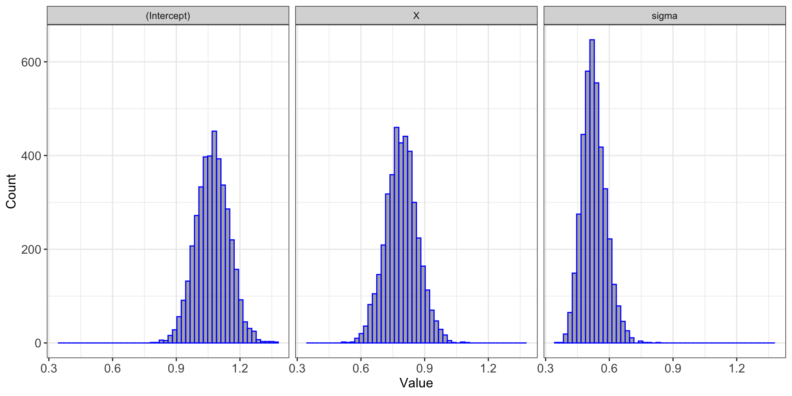

Introduction to rstanarm
PACFWRU, Penn State University
2024-03-14
Bayesian models using rstanarm
For “common” regression models, writing out code in Stan (as we will see) can be tedious
rstanarm was developed to fit Bayesian models using Stan, but allowing for user-friendly model syntax that emulates other R functions
rstanarm can fit regressions similar to functions like:
lm: linear models
glm: generalized linear models
glmer: linear mixed models
gamm4: generalized linear additive models
However, rstanarm functions start with “stan_
”
Basic syntax
Similar to commonly used frequentist model fitting functions
For a simple linear regression model:
\[ y_i = \beta_0 + \beta_1 \times X_i + \epsilon_i, \quad i = 1,2, \ldots N \]
\[ \epsilon_i \sim N(0, \sigma^2) \] Using lm
Using rstanarm
Let’s simulate some data
The model \[ y_i = \beta_0 + \beta_1 \times X_i + \epsilon_i, \quad i = 1,2, \ldots N \]
\[ \epsilon_i \sim N(0, \sigma^2) \]
R code
set.seed(1857)
# Number of observations
N <- 50
# Intercept
B0 <- 1
# Slope
B1 <- 0.70
# Predictor variable
X <- rnorm(N, 0, 1)
# Expected value
mu <- B0 + B1 * X
# Residual standard deviation
sigma <- 0.50
# Response with error
Y <- rnorm(n = N, mean = mu, sd = sigma)
# Create data frame
data <- data.frame(Y, X)Model using lm
Call:
lm(formula = Y ~ X, data = data)
Residuals:
Min 1Q Median 3Q Max
-1.22346 -0.44729 -0.02602 0.33386 1.33552
Coefficients:
Estimate Std. Error t value Pr(>|t|)
(Intercept) 1.07371 0.07500 14.32 < 2e-16 ***
X 0.79114 0.07369 10.74 2.35e-14 ***
---
Signif. codes: 0 '***' 0.001 '**' 0.01 '*' 0.05 '.' 0.1 ' ' 1
Residual standard error: 0.5171 on 48 degrees of freedom
Multiple R-squared: 0.706, Adjusted R-squared: 0.6999
F-statistic: 115.3 on 1 and 48 DF, p-value: 2.354e-14Fit model using stan_glm
SAMPLING FOR MODEL 'continuous' NOW (CHAIN 1).
Chain 1:
Chain 1: Gradient evaluation took 0.000109 seconds
Chain 1: 1000 transitions using 10 leapfrog steps per transition would take 1.09 seconds.
Chain 1: Adjust your expectations accordingly!
Chain 1:
Chain 1:
Chain 1: Iteration: 1 / 2000 [ 0%] (Warmup)
Chain 1: Iteration: 200 / 2000 [ 10%] (Warmup)
Chain 1: Iteration: 400 / 2000 [ 20%] (Warmup)
Chain 1: Iteration: 600 / 2000 [ 30%] (Warmup)
Chain 1: Iteration: 800 / 2000 [ 40%] (Warmup)
Chain 1: Iteration: 1000 / 2000 [ 50%] (Warmup)
Chain 1: Iteration: 1001 / 2000 [ 50%] (Sampling)
Chain 1: Iteration: 1200 / 2000 [ 60%] (Sampling)
Chain 1: Iteration: 1400 / 2000 [ 70%] (Sampling)
Chain 1: Iteration: 1600 / 2000 [ 80%] (Sampling)
Chain 1: Iteration: 1800 / 2000 [ 90%] (Sampling)
Chain 1: Iteration: 2000 / 2000 [100%] (Sampling)
Chain 1:
Chain 1: Elapsed Time: 0.03 seconds (Warm-up)
Chain 1: 0.034 seconds (Sampling)
Chain 1: 0.064 seconds (Total)
Chain 1:
SAMPLING FOR MODEL 'continuous' NOW (CHAIN 2).
Chain 2:
Chain 2: Gradient evaluation took 1.4e-05 seconds
Chain 2: 1000 transitions using 10 leapfrog steps per transition would take 0.14 seconds.
Chain 2: Adjust your expectations accordingly!
Chain 2:
Chain 2:
Chain 2: Iteration: 1 / 2000 [ 0%] (Warmup)
Chain 2: Iteration: 200 / 2000 [ 10%] (Warmup)
Chain 2: Iteration: 400 / 2000 [ 20%] (Warmup)
Chain 2: Iteration: 600 / 2000 [ 30%] (Warmup)
Chain 2: Iteration: 800 / 2000 [ 40%] (Warmup)
Chain 2: Iteration: 1000 / 2000 [ 50%] (Warmup)
Chain 2: Iteration: 1001 / 2000 [ 50%] (Sampling)
Chain 2: Iteration: 1200 / 2000 [ 60%] (Sampling)
Chain 2: Iteration: 1400 / 2000 [ 70%] (Sampling)
Chain 2: Iteration: 1600 / 2000 [ 80%] (Sampling)
Chain 2: Iteration: 1800 / 2000 [ 90%] (Sampling)
Chain 2: Iteration: 2000 / 2000 [100%] (Sampling)
Chain 2:
Chain 2: Elapsed Time: 0.03 seconds (Warm-up)
Chain 2: 0.034 seconds (Sampling)
Chain 2: 0.064 seconds (Total)
Chain 2:
SAMPLING FOR MODEL 'continuous' NOW (CHAIN 3).
Chain 3:
Chain 3: Gradient evaluation took 9e-06 seconds
Chain 3: 1000 transitions using 10 leapfrog steps per transition would take 0.09 seconds.
Chain 3: Adjust your expectations accordingly!
Chain 3:
Chain 3:
Chain 3: Iteration: 1 / 2000 [ 0%] (Warmup)
Chain 3: Iteration: 200 / 2000 [ 10%] (Warmup)
Chain 3: Iteration: 400 / 2000 [ 20%] (Warmup)
Chain 3: Iteration: 600 / 2000 [ 30%] (Warmup)
Chain 3: Iteration: 800 / 2000 [ 40%] (Warmup)
Chain 3: Iteration: 1000 / 2000 [ 50%] (Warmup)
Chain 3: Iteration: 1001 / 2000 [ 50%] (Sampling)
Chain 3: Iteration: 1200 / 2000 [ 60%] (Sampling)
Chain 3: Iteration: 1400 / 2000 [ 70%] (Sampling)
Chain 3: Iteration: 1600 / 2000 [ 80%] (Sampling)
Chain 3: Iteration: 1800 / 2000 [ 90%] (Sampling)
Chain 3: Iteration: 2000 / 2000 [100%] (Sampling)
Chain 3:
Chain 3: Elapsed Time: 0.03 seconds (Warm-up)
Chain 3: 0.031 seconds (Sampling)
Chain 3: 0.061 seconds (Total)
Chain 3:
SAMPLING FOR MODEL 'continuous' NOW (CHAIN 4).
Chain 4:
Chain 4: Gradient evaluation took 1.1e-05 seconds
Chain 4: 1000 transitions using 10 leapfrog steps per transition would take 0.11 seconds.
Chain 4: Adjust your expectations accordingly!
Chain 4:
Chain 4:
Chain 4: Iteration: 1 / 2000 [ 0%] (Warmup)
Chain 4: Iteration: 200 / 2000 [ 10%] (Warmup)
Chain 4: Iteration: 400 / 2000 [ 20%] (Warmup)
Chain 4: Iteration: 600 / 2000 [ 30%] (Warmup)
Chain 4: Iteration: 800 / 2000 [ 40%] (Warmup)
Chain 4: Iteration: 1000 / 2000 [ 50%] (Warmup)
Chain 4: Iteration: 1001 / 2000 [ 50%] (Sampling)
Chain 4: Iteration: 1200 / 2000 [ 60%] (Sampling)
Chain 4: Iteration: 1400 / 2000 [ 70%] (Sampling)
Chain 4: Iteration: 1600 / 2000 [ 80%] (Sampling)
Chain 4: Iteration: 1800 / 2000 [ 90%] (Sampling)
Chain 4: Iteration: 2000 / 2000 [100%] (Sampling)
Chain 4:
Chain 4: Elapsed Time: 0.029 seconds (Warm-up)
Chain 4: 0.034 seconds (Sampling)
Chain 4: 0.063 seconds (Total)
Chain 4: Summarize posterior
Model Info:
function: stan_glm
family: gaussian [identity]
formula: Y ~ X
algorithm: sampling
sample: 4000 (posterior sample size)
priors: see help('prior_summary')
observations: 50
predictors: 2
Estimates:
mean sd 10% 50% 90%
(Intercept) 1.071 0.077 0.973 1.071 1.170
X 0.791 0.076 0.695 0.791 0.888
sigma 0.528 0.056 0.459 0.523 0.602
Fit Diagnostics:
mean sd 10% 50% 90%
mean_PPD 0.893 0.107 0.755 0.893 1.027
The mean_ppd is the sample average posterior predictive distribution of the outcome variable (for details see help('summary.stanreg')).
MCMC diagnostics
mcse Rhat n_eff
(Intercept) 0.001 1.000 3526
X 0.001 1.000 3679
sigma 0.001 1.000 3539
mean_PPD 0.002 1.001 3750
log-posterior 0.032 1.001 1717
For each parameter, mcse is Monte Carlo standard error, n_eff is a crude measure of effective sample size, and Rhat is the potential scale reduction factor on split chains (at convergence Rhat=1).Check convergence
Extract at MCMC draws
# Extract posterior samples for summarizing, plotting, etc.
samples <- stan_m1 %>%
as.data.frame
head(samples, 5) (Intercept) X sigma
1 1.033076 0.8286735 0.5109322
2 1.039002 0.8619552 0.5236448
3 1.078981 0.7228188 0.5371987
4 1.077593 0.7873031 0.5530445
5 1.019763 0.8411419 0.5360369# Plot posterior distributions
# Go from wide to long for facet plotting
post_plot <- samples %>%
gather(parameter, value, `(Intercept)`:sigma, factor_key=TRUE)
head(post_plot, 5) parameter value
1 (Intercept) 1.033076
2 (Intercept) 1.039002
3 (Intercept) 1.078981
4 (Intercept) 1.077593
5 (Intercept) 1.019763Visualize posterior distributions
Calculate posterior summaries
Do by hand for more control
post_plot %>%
group_by(parameter) %>%
summarise(mean = mean(value),
lower = quantile(value,probs = 0.025),
upper = quantile(value,probs = 0.975)) %>%
kbl(caption = "Posterior estimates", digits=3,
col.names = c("Parameter", "Mean", "Lower CI", "Upper CI")) %>%
kable_classic(full_width = F, html_font = "Cambria")| Parameter | Mean | Lower CI | Upper CI |
|---|---|---|---|
| (Intercept) | 1.071 | 0.920 | 1.222 |
| X | 0.791 | 0.643 | 0.945 |
| sigma | 0.528 | 0.430 | 0.650 |
Plot estimates

Visualize model fit
# Create a fake predictor variable corresponding to our X
fake.x <- seq(min(X), max(X), length=50)
# Container to hold predicted values
preds <- array(NA, c(dim(samples)[1], length(fake.x)))
# Predict across values of X for all MCMC samples
for(i in 1:length(fake.x)){
preds[,i] <- samples$`(Intercept)` + samples$X * fake.x[i]
}
dim(preds)[1] 4000 50Plot code
ggplot() +
geom_line(data=plot_fit_m1, aes(x=fake.x, y=mean.fit), linewidth=0.8) +
geom_ribbon(data=plot_fit_m1, aes(x=fake.x, ymax=upper, ymin=lower),
fill="green", alpha=0.3) +
geom_point(data=data, aes(x=X, y=Y)) +
xlab('X') +
ylab('Y') +
theme_bw() +
theme(panel.grid = element_blank(),
axis.title = element_text(size=12),
axis.text = element_text(size=12))Plot
Note
The credible interval in the previous figure is a 95% credible interval - it accounts for uncertainty in the \(\beta\)’s (only uncertainty in the mean). To plot a 95% prediction interval we would also need to account for uncertainty in \(\sigma\).
Stan options
To this point we have relied on default settings for fitting the regression model in rstanarm, but this may not always be desirable
stan_m2 <- stan_glm(Y ~ X, data = data,
family = gaussian,
iter = 2000, # of iterations per chain
warmup = 1000, # of iter to use in warmup
chains = 1, # of chains to run
cores = 1, # of parallel cores to run chains on
prior = normal(), # specify a prior
control =
list(max_treedepth = 15,
adapt_delta = 0.8) )MCMC controls
max_treedepth: controls how far the model will look for a new proposal before giving up. Higher values allow model to explore a flatter posterior (increases computation time)
max_treedepth: The target rate that new proposals are accepted. Higher value means the model takes smaller steps (increases computation time)
MCMC best practices - run multiple chains
Allows for convergence diagnostics, all chains should converge to the same place
3 or 4 is a good number of chains
Chains can be run in parallel
Setting priors
- Defaults may not be desired, see
?rstanarm::priorsfor details
Informative prior example
What if we had very strong prior information that \(\beta_1\) was 2.
Compare effects of this prior
| Parameter | Mean | Lower CI | Upper CI |
|---|---|---|---|
| (Intercept) | 1.338 | 0.971 | 1.701 |
| X | 1.978 | 1.925 | 2.030 |
| sigma | 1.310 | 1.088 | 1.600 |
| Parameter | Mean | Lower CI | Upper CI |
|---|---|---|---|
| (Intercept) | 1.071 | 0.920 | 1.222 |
| X | 0.791 | 0.643 | 0.945 |
| sigma | 0.528 | 0.430 | 0.650 |
Compare samples from the posterior and the prior
Evaluate model fit
- R-hat: measures whether all the chains have mixed for each parameter. Parameters with high R-hat values probably haven’t converged
- Bulk ESS: Measures the effective sample size of each parameter. Too low suggests you might need more iterations or re-parameterization
Statistical inference
Look at if X% credible interval overlaps zero (a frequentist vibe)
Look at posterior probabilities
Posterior probability
- Ask the question: “what is the posterior probability that \(\beta_1\) is positive?
- Ask the question: “what is the posterior probability that \(\beta_1\) is greater than 0.45?
Posterior probability
You can imagine some more informative questions to ask with different models
What is the posterior probability that abundance is > X?
What is the posterior probability that catch-per-unit effort is declining over time?
What is the posterior probability that species X is more abundant than species Y?
What is the posterior probability that lake A has greater abundance than lake B?
Compare models (hypotheses)
Out-of-sample (oos): if prediction is the goal, then it makes sense to evaluate models in terms of predictive performance
- oos data are observations not used to fit the model (i.e., use “training” and validation [oos] data)
Information criteria (Akaike Information Criterion [AIC], Deviance Information Criterion [DIC], etc.): For Bayesian models we commonly use leave-one-out cross-validation (LOO) information criterion (LOO-IC)
LOO-IC ( R package loo)
By estimating the fit of out-of-sample data the LOO-IC, like other IC, avoids selecting models that are overfit to the observed data
Essentially, model performance is evaluated and the model is then penalised for complexity
Lower LOO-IC indicates better goodness of fit (preferred model)
- A difference of > 2 in the LOO-IC between two models indicates statistical significance
LOO-IC example
Simulate some data
The model \[ y_i = \beta_0 + \beta_1 \times X1_i + \beta_2 \times X2_i + \epsilon_i, \quad i = 1,2, \ldots N \]
\[ \epsilon_i \sim N(0, \sigma^2) \]
Simulation
set.seed(1857)
# Number of observations
N <- 100
# Intercept
B0 <- 1
# Slope 1
B1 <- 0.15
# Slope 2
B2 <- -0.30
# Predictor variables
X1 <- rnorm(N, 0, 1)
X2 <- rnorm(N, 0, 1)
# Expected value
mu <- B0 + B1 * X1 + B2 * X2
# Residual standard deviation
sigma <- 0.50
# Response with error
Y <- rnorm(n = N, mean = mu, sd = sigma)
data <- data.frame(Y, X1, X2)Fit model using lm
Call:
lm(formula = Y ~ X1 + X2, data = data)
Residuals:
Min 1Q Median 3Q Max
-1.44636 -0.32013 -0.07529 0.34548 1.48008
Coefficients:
Estimate Std. Error t value Pr(>|t|)
(Intercept) 1.00896 0.05330 18.931 < 2e-16 ***
X1 0.13098 0.05201 2.519 0.0134 *
X2 -0.31171 0.05612 -5.554 2.44e-07 ***
---
Signif. codes: 0 '***' 0.001 '**' 0.01 '*' 0.05 '.' 0.1 ' ' 1
Residual standard error: 0.532 on 97 degrees of freedom
Multiple R-squared: 0.2863, Adjusted R-squared: 0.2716
F-statistic: 19.46 on 2 and 97 DF, p-value: 7.835e-08Fit model using stan_glm
Predictor variable selection
Could remove non-significant parameters (e.g., forward, stepwise selection, etc.)
Fit model with predictors hypothesized to be important and report all results, even for those that overlap with zero (i.e., don’t remove any non-significant predictors)